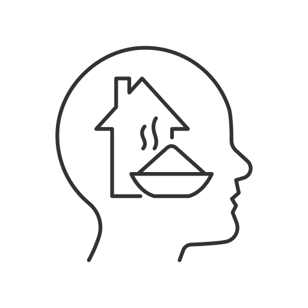

La Atención: Nuestro Filtro Mental
¿Qué es la atención? Imagina que tu cerebro recibe miles de estímulos al mismo tiempo: lo que ves, lo que oyes, lo que sientes... La atención es el proceso cognitivo que nos permite seleccionar y procesar solo algunos de esos datos. Es como un filtro que nos ayuda a concentrarnos en lo que es importante en un momento dado.
En otras palabras, es la concentración de nuestra actividad mental sobre algo específico que queremos percibir o conocer.
La atención nos ayuda a seleccionar qué información procesar.
Factores que Afectan la Atención
Nuestra capacidad de prestar atención no es constante; depende de varios factores:
Factores Internos (Propios de cada persona):
-  Necesidades fisiológicas: Si tenemos hambre, sed o sueño, nos resulta más difícil concentrarnos.
 Factores psicológicos: Nuestro nivel de desarrollo, nuestros intereses, nuestras motivaciones o lo que esperamos de una situación influyen enormemente.
Factores psicológicos: Nuestro nivel de desarrollo, nuestros intereses, nuestras motivaciones o lo que esperamos de una situación influyen enormemente.
Factores Externos (Del Ambiente):
- Intensidad: Los estímulos más intensos (colores vivos, sonidos fuertes) atraen más atención.
- Novedad: Algo nuevo o inesperado llama más la atención que lo familiar.
- Significación del objeto: Es más fácil prestar atención a algo que entendemos o que tiene sentido para nosotros.
- Movimiento: Los objetos en movimiento suelen captar nuestra atención más fácilmente que los estáticos.
- Contraste: La variedad o el contraste entre diferentes estímulos mantiene el interés.
Tipos de Atención
Podemos distinguir dos tipos principales:
- Atención Voluntaria: Es cuando decidimos conscientemente prestar atención a algo, incluso si requiere un esfuerzo. Nos concentramos porque algo nos interesa o porque es necesario para una tarea.
- Atención Involuntaria: Se activa de forma automática e inconsciente por las características de un estímulo externo (un ruido fuerte, una luz brillante, un movimiento inesperado). Algo "nos llama" la atención sin que lo hayamos decidido.
En la educación infantil, los niños van pasando gradualmente de depender más de la atención involuntaria (reaccionando a estímulos llamativos) a desarrollar la capacidad de la atención voluntaria conforme maduran.
Cómo Trabajar la Atención en Educación Infantil
Para ayudar a los niños a desarrollar su atención de forma progresiva, los educadores pueden:
- Usar el juego: Integrar actividades de atención en juegos y situaciones que sean interesantes y motivadoras para el niño.
- Aumentar gradualmente la dificultad: Empezar con tareas cortas y sencillas y aumentar poco a poco su duración y complejidad.
- Proporcionar apoyo y refuerzo: Dar instrucciones claras, ofrecer ayuda verbal y reconocer y elogiar los esfuerzos y logros (refuerzo positivo).
- Ser un modelo: Mostrar a los niños cómo prestar atención a través de nuestro propio comportamiento y concentración en las actividades.
Es importante recordar que pueden existir trastornos de la atención, que pueden ser permanentes (asociados a ciertas condiciones) o temporales (causados por estrés, ansiedad u otros factores). Si se sospecha un trastorno, es crucial buscar la evaluación de un profesional.